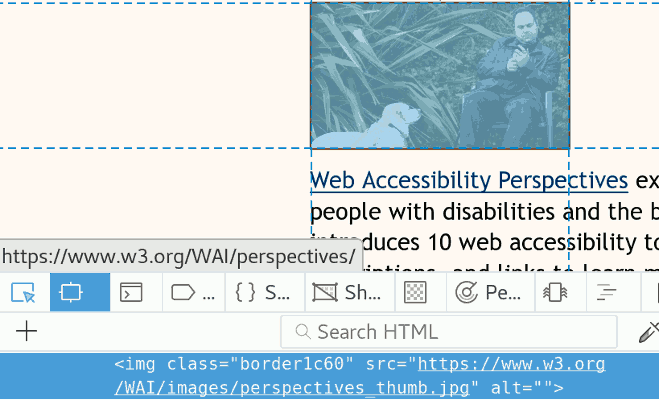
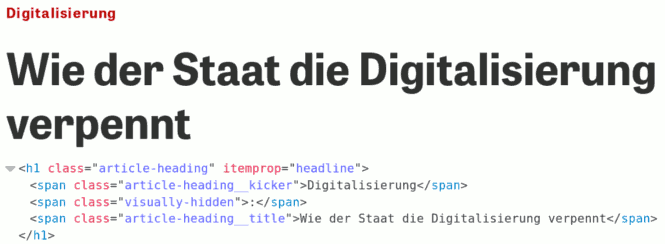
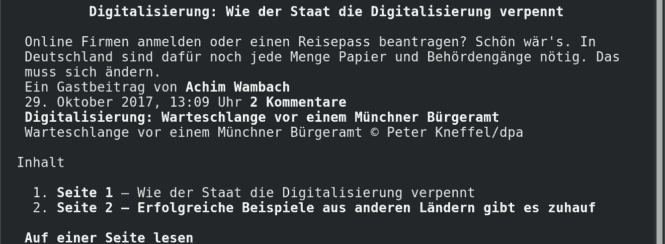

WCAG
Web Content Accessibility Guidelines
Author: Jonas Jared Jacek · License: CC BY-NC-ND 4.0duration: ~30 min
Contents
- Setting
History of the World Wide Web and the work of W3C. - Web Accessibility
Work of W3C for accessibility on the World Wide Web. - WCAG 2.1
Glimpse at the Web Content Accessibility Guidelines.
Teil 1
Setting
History of the World Wide Web and the work of W3C.
History
1968 -first workable prototype of ARPANET1983 -adoption of TCP/IP - birth of the Internet.1989 -Tim Berners-Lee developed the Mesh.1990 -Mesh is renamed to World Wide Web.
World Wide Web (WWW), is called the Web herinafter.
Tim Berners-Lee

Tim Berners-Lee has developed the first website, the first browser and the first web server.
He wrote the first specifications for URLs, HTTP and HTML.
World Wide Web Consortium (W3C)
In 1994, Tim Berners-Lee founded the W3C, a standardization organization for the technologies of the Web.
Mission
The W3C mission is to lead the Web to its full potential by developing protocols and guidelines that ensure the long-term growth of the Web.
Standards
W3C develops hundreds of standards:
- HTML
- XML
- CSS
- SVG
- WOFF
- WCAG
- …
Members
More than 450 organizations are active in W3C.
Extract from the list of members:
- Arron Eicholz, Microsoft
- Alex Danilo, Google
- Edward O'Connor, Apple Inc.
- Jonathan Watt, Mozilla Corporation
- Erik Dahlström, Opera Software
- Anthony Grasso, Canon Inc.
- …
Assertive
- Broad social base
Government representatives, academics, private companies, organizations, … - Open processes
(Mostly) transparent processes, participation / feedback is possible and required. - Free use
Standards are freely accessible, free use, wide distribution is sought.
W3C - Multilingual Web Workshop
 Impression from the workshop at the European Commission, Luxembourg - 2012
Impression from the workshop at the European Commission, Luxembourg - 2012
Teil 2
Web Accessibility
Work of W3C for accessibility on the World Wide Web.
Universal Design
Tim Berners-LeeThe power of the Web is in its universality.
Access by everyone regardless of disability is an essential aspect.
The Web is fundamentally designed to work for all people, whatever their …
- hardware, software
- network infrastructure
- language, culture, geographical location
- physical and/or mental ability
Hardware and Software
Die Inklusionsarbeit bzgl. Hardware und Software drückt sich u.a. durch die Zusammenarbeit mit Herstellern aus.
Beispiele: Google, Mozilla, Microsoft, Canon, Siemens.
Netzwerke
Die Inklusionsarbeit bzgl. Netzwerkinfrastruktur drückt sich u.a. durch die Zusammenarbeit mit und Kompatibilität zu Standards anderer Standardisierungsorganisationen, z.B. der Internet Engineering Task Force (IETF) aus.
Entwickelt: TCP/IP, DNS, HTTP, etc.
World Wide Web im Internet
IETF beschreibt die Technologien des Internet.
W3C beschreibt die Technologien des World Wide Web.
Internet
(IETF)
World Wide Web
(W3C)
Sprache, Kultur und Geografische Lage
Die Inklusionsarbeit bzgl. Sprache, Kultur und geografischer Lage, findet u.a. innerhalb der W3C Internationalization (i18n) Activity statt.
Entwickelt: Working Group übergreifende Richtlinien und Tutorials für mehrsprachige Inhalte und interkulturelle Funktionen.
Körperliche und geistige Fähigkeiten
Die Inklusionsarbeit bzgl. körperlicher und/oder geistiger Fähigkeiten, findet u.a. innerhalb der W3C Web Accessibility Initiative (WAI) statt.
Entwickelt: ATAG, UAAG und WCAG.
W3C-Ökosystem
Working Groups & Task Forces entwickeln Standards.
W3C
HTML
Working Group (WG)
HTML5
...
WAI
Task Force
WA WG
WCAG
2.0
Web Accessibility Komponenten
3 Guidelines für Web Accessibility:
- Authoring Tool Accessibility Guidelines (ATAG)
- Web Content Accessibility Guidelines (WCAG)
- User Agent Accessibility Guidelines (UAAG)
Web Accessibility Komponenten
Authoring Tool Accessibility Guidelines (ATAG)

Web Accessibility Komponenten
Web Content Accessibility Guidelines (WCAG)

Web Accessibility Komponenten
User Agent Accessibility Guidelines (UAAG)

Web Accessibility Initiative (WAI)
Ca. 150 Menschen aus Industrie, Behindertenorganisationen, Behörden und Forschungslabors.
Web Accessibility Working Group (WA WG)
Auszug der Mitgliederliste:
- Steve Faulkner, The Paciello Group
- Joshue O Connor, InterAccess
- Loretta Guarino Reid, Google
- Cynthia Shelly, Microsoft
- Andrew Kirkpatrick, Adobe
- Drew LaHart, IBM
- Gregg Vanderheiden, University of Wisconsin
- …
Teil 3
WCAG 2.1
Glimpse at the Web Content Accessibility Guidelines.
WCAG 2.1
Der Guideline umfasst eine breite Palette von Empfehlungen für die Bereitstellung von Webinhalten für Menschen mit Behinderungen/Einschränkungen, u.a.:
- Blindheit und Sehschwäche
- Taubheit und Hörverlust
- Lernschwierigkeiten
- kognitive Einschränkungen
- begrenzte Bewegungen
- Sprachbehinderungen
- Lichtempfindlichkeit
- sowie Kombinationen dieser Einschränkungen
Wen betrifft das?
"Eine Milliarde Menschen oder 15% der Weltbevölkerung, leben mit irgendeiner Form von Behinderung."
Weltbank
Umschreibende Zusammenfassung
Die folgenden Seiten enthalten eine paraphrasierte Zusammenfassung der Web Content Accessibility Guidelines (WCAG) 2.0.
Die (normativen) technischen Spezifikationen finden Sie unter www.w3.org/TR/WCAG20.
Grundsätze (Principles)
Anforderungen der WCAG an barrierefreiheit:
- Wahrnehmbar (4 Richtlinien)
- Bedienbar (4 Richtlinien)
- Verständlich (3 Richtlinien)
- Robust (1 Richtlinie)
1. Wahrnehmbar
Allgemeine Anforderung:
"Informationen und Komponenten der Benutzeroberfläche (z.B. Formulare) müssen so aufbereitet sein, dass ein Benutzer sie auf unterschiedliche Art und Weise wahrnehmen kann."
1. Wahrnehmbar
Die Anforderung enthält folgende 4 Richtlinien für Barrierefreiheit:
1.1. Textalternativen
"Stellen Sie Textalternativen für alle Nicht-Text-Inhalte zur Verfügung, damit diese in andere Formen umgewandelt werden können, z.B. Blindenschrift, Symbole oder einfachere Sprache."
1.1. Textalternativen
(negativ) Beispiel 1: Alternative = Text
1.1. Textalternativen
Beispiel 2: Alternative = gesprochenes Wort (Audio)

1.2. Alternativen für zeitbasierte Medien
"Stellen Sie Alternativen für zeitbasierte Medien wie Audio und Video bereit, damit diese in andere Formen umgewandelt werden können, z.B. Blindenschrift, Symbole oder einfachere Sprache."
1.2. Alternativen für zeitbasierte Medien
Beispiel: Alternative = Text (Web Video Text Track (.vtt))

1.3. Anpassungsfähig
"Erstellen Sie Inhalte, die auf unterschiedliche Weise dargestellt werden können (z. B. einfacheres Layout), ohne Informationen oder Struktur zu verlieren."
https://www.w3.org/TR/UNDERSTANDING-WCAG20/content-structure-separation.html
1.3. Anpassungsfähig
Beispiel: Inhalt unabhängig von visueller Darstellung
1.3. Anpassungsfähig
Beispiel: Inhalt unabhängig von visueller Darstellung
1.4. Unterscheidbar
"Erleichtern Sie dem Nutzer das Anzeigen und Hören von Inhalten, einschließlich der Trennung des Vordergrunds vom Hintergrund."
https://www.w3.org/TR/UNDERSTANDING-WCAG20/visual-audio-contrast.html
1.4. Unterscheidbar
Beispiel 1: Farbunabhängige Informationen.

1.4. Unterscheidbar
Beispiel 1: Alternative = Symbole

1.4. Unterscheidbar
Beispiel 2: Schriftart, Größe und Kontrast.

Grundsätze (Principles)
Anforderungen der WCAG an barrierefreiheit:
- Wahrnehmbar (4 Richtlinien)
- Bedienbar (4 Richtlinien)
- Verständlich (3 Richtlinien)
- Robust (1 Richtlinie)
2. Bedienbar
Allgemeine Anforderung:
"Komponenten der Benutzeroberfläche und Navigation müssen auf unterschiedliche Art und Weise bedienbar sein."
2. Bedienbar
Der Grundsatz enthält folgende 4 Richtlinien für Barrierefreiheit:
2.1. Per Tastatur zugänglich
"Stellen Sie alle Funktionen auch über eine Tastatur zur Verfügung."
https://www.w3.org/TR/UNDERSTANDING-WCAG20/keyboard-operation.html
2.1. Per Tastatur zugänglich
(negativ) Beispiel 1: Unzugänglich

2.2. Genügend Zeit zum Lesen und Verwenden
"Stellen Sie Benutzern ausreichend Zeit zum Lesen und Verwenden von Inhalten zur Verfügung."
2.2. Genügend Zeit zum Lesen und Verwenden
Beispiel 1: Pause, Stop, Hide

2.3. Krampfanfälle vermeiden
"Entwerfen Sie Inhalte nicht auf eine Weise, die bekanntermaßen Anfälle verursacht (grob: alles was mehr als 3 Mal/Sekunde blinkt."
2.3. Krampfanfälle vermeiden
(negativ) Beispiel 1: Animated Gifs (auch Werbung)

2.3. Krampfanfälle vermeiden
Beispiel 1: Missbrauch

2.4. Einfaches navigieren
"Bieten Sie Nutzern die Möglichkeit zu navigieren, Inhalte zu finden und zu bestimmen, wo sie sich befinden."
https://www.w3.org/TR/UNDERSTANDING-WCAG20/navigation-mechanisms.html
2.4. Einfaches navigieren
Beispiel 1: Skip Navigation

2.4. Einfaches navigieren
Beispiel 2: Breadcrumbs

Grundsätze (Principles)
Anforderungen der WCAG an barrierefreiheit:
- Wahrnehmbar (4 Richtlinien)
- Bedienbar (4 Richtlinien)
- Verständlich (3 Richtlinien)
- Robust (1 Richtlinie)
3. Verständlich
Allgemeine Anforderung:
"Informationen und die Bedienung der Benutzeroberfläche müssen verständlich sein."
3. Verständlich
Der Grundsatz enthält folgende 3 Richtlinien für Barrierefreiheit:
3.1. Lesbar und verständlich
"Textinhalte müssen lesbar und verständlich sein."
3.1. Lesbar und verständlich
Beispiel 1: Abkürzungen (Abbreviations)

3.1. Lesbar und verständlich
(negativ) Beispiel 2: Sprache

3.2. Vorhersehbar
"Gestalten Sie Webseiten vorhersehbar in Aussehen und Funktion."
https://www.w3.org/TR/UNDERSTANDING-WCAG20/consistent-behavior.html
3.2. Vorhersehbar
(negativ) Beispiel 1: Konsistente Navigation
Seit über 10 Jahren ein verlässliches Beispiel für inkonsistente Navigation:

3.3. Fehler vermeiden und korrigieren
"Helfen Sie Benutzern, Fehler zu vermeiden und zu korrigieren."
https://www.w3.org/TR/UNDERSTANDING-WCAG20/minimize-error.html
3.3. Fehler vermeiden und korrigieren
(negativ) Beispiel 1: Keine Text-Fehleridentifikation

Grundsätze (Principles)
Anforderungen der WCAG an barrierefreiheit:
- Wahrnehmbar (4 Richtlinien)
- Bedienbar (4 Richtlinien)
- Verständlich (3 Richtlinien)
- Robust (1 Richtlinie)
4. Robust
Allgemeine Anforderung:
"Maximieren Sie die Kompatibilität mit aktuellen und zukünftigen User-agents, einschließlich technischer Hilfsmittel für Menschen mit Behinderungen."
https://www.w3.org/TR/UNDERSTANDING-WCAG20/ensure-compat.html
4. Robust
Der Grundsatz enthält folgende Richtlinie für Barrierefreiheit:
4.1. Kompatibilität
Beispiel 1: Validierung [validator.w3.org]

4.1. Kompatibilität
Weitere Werkzeuge zur Validierung finden Sie unter:
https://www.w3.org/WAI/ER/tools/
4.1. Robust
Webseiten, vollständig nach aktuellen Spezifikationen entwickelt, sind robust.
Teil 4
References
Sources, references and further reading.
References - Books
- Title
Author - ISBN: XXXXXXXXXXXXX
References - Web
- Title
#